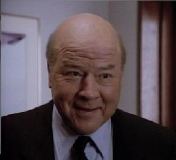

|
Navn: Peter Thornton Kone: Connie Thornton (Fraskilt) Barn: Michael Thornton |
 |
Peter er MacGyvers' sjef hos og beste venn. Han er sjef for feltopperasjoner ved Phoenix Foundation. Han er eksmillitær og har jobbet i Department of eXternal Services (DSX). Det var på et oppdrag for dem at hans og MacGyvers stier krysset. Peter var på jakt etter en farlig leiemorder ved navn Murdoc, da MacGyver reddet livet hans ved hjelp av en skolisse og en binders.
Han er skilt fra sin kone, Connie og har en sønn, Michael. Peters forhold til Michael er ikke særlig god ettersom Peter er arbeidsnarkoman og sønnen beskylder ham for å ikke å ha vært til stede når han vokste opp. Dette fører til at Michael til slutt missbruker farens dårlige samvittighet til å skaffe han en jobb i Phoenix Foundation. Her prøver han å stjele plantegningene til en topp hemmelig mikro-chipp. Han blir heldigvis tatt på fersken og han bestemmer seg for å fortelle alt og angi sine medsammensvorne. Forholdet dem i mellom er fortsatt ikke helt godt, men de jobber med det.
i: Du er nå på Peter Thornton siden
Karakter meny:
| MacGyver | |
| Jack Dalton | |
| Harry Jackson | |
| Murdoc | |
| Pete Thornton |